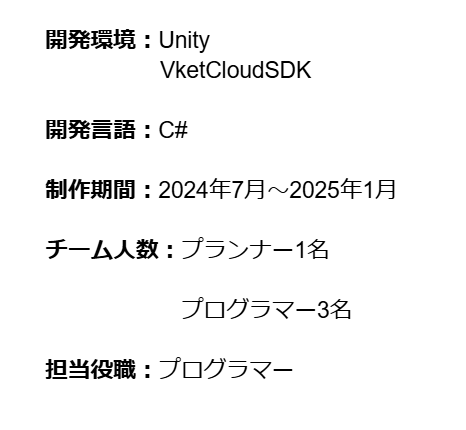

SnowyMountainAdventure
ゲーム概要
このゲームは株式会社HIKKYのVketCloudSDKを使って開発したスキーゲームです。仮想的な雪山環境の中でスキーコースに挑戦し、コース内で滑走し、加速ラインを利用して短時間内にゴールを目指します。操作方法につきまして、WキーとSキーで前進と後進の移動となります。QキーとEキーで左右の移動となります。
苦労した点
今回の制作では、VketCloudSDKというVketCloudエンジンを使ってコンテンツやワールドを作成するための開発キットは初めて使うため、使い方について苦労しました。開始当初はそれぞれのコンポーネントの使いが上手くできず、多くの遅れが発生しました。この状況を解決するため、私はみんなで一緒にまずそれぞれのコンポーネントをよく理解した後、作業に入るというやり方を提案しました。
担当箇所
このプロジェクトでは、プレイヤーの移動、出発点とゴールの配置、マップの配置と微調整、それぞれのバッグの修正を担当しました。
ソースコード
